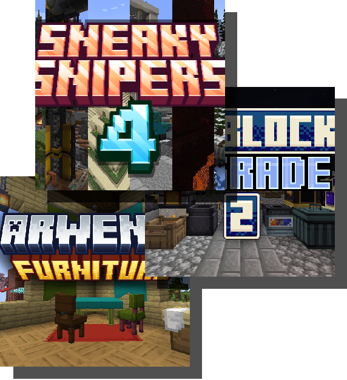

Hi! I'm ArwenOC. I am a college student in my senior year pursuing a bachelors in Computer Science, and I've been a Minecraft content developer for over 5 years
In my time as a developer, I've worked to create a high quality assortment of Minecraft maps, datapacks, and 3D models as a free agent, and under mapmaking teams.
Most of my work can be found on this site, my Planet Minecraft page, and occasionally published to Minecraft Realms.
On this site, you can find links to all the content during my time as a creator.
To view and/or download my content, visit the Projects page.
If you're viewing this page as a client for either datapack development or 3D model creation, I am open for commissions / hire in these areas:
- Mapmaking
- Datapack Development
- 3D Model Creation
Please refer to my Projects and Portfolio pages to view samples of the content that I am able to produce. Thank you for your consideration!
Return to home